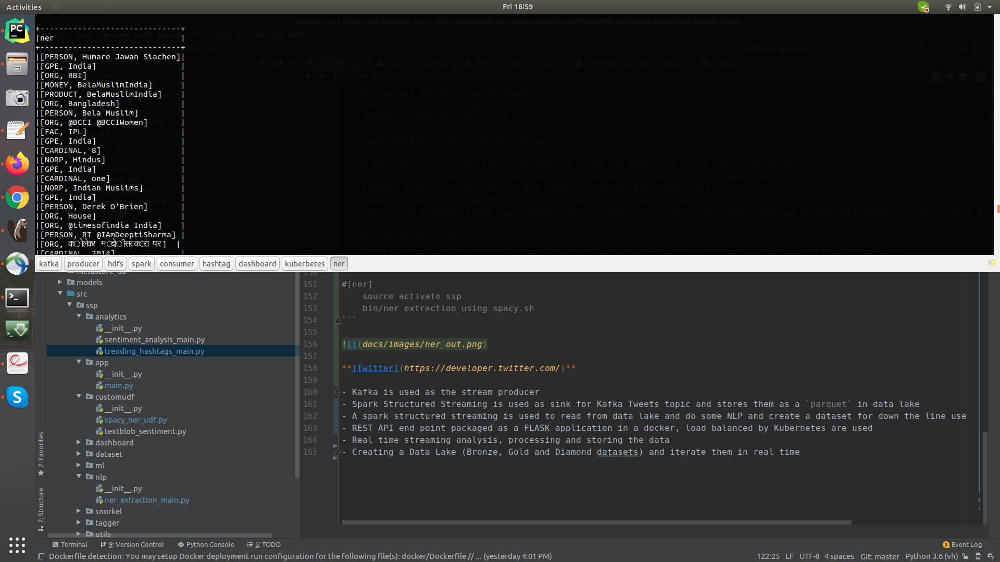

Scalable REST end point a naive approach¶
Requirements¶
Build a naive approach for a scalable back end loading the spaCy model (12MB) and serve them over a REST end point with Kubernetes
Perform NLP task called NER with spaCy
Implementation¶
Design Flask application with a end point to do spaCy NER
Define Docker with flask application
Define Kubernetes service and deployment file
Run as Kubernetes application
Bronze Lake/Live Stream -> Spark Structured Streaming Parquet Source -> Extract NER Tags from text with UDF -> Spark Structured Streaming Console Sink
Extract NER Tags from text with UDF : Raw Text -> REST API end point -> Kubernetes -> Docker -> Flask -> spaCy -> NER

Configuration¶
Config file used : default_ssp_config.gin
Kubernets port number is configured here
How to run?¶
There are two ways of running, that is on docker or on your local machine. In either case, opening the terminal is the difference, once the terminal is launched, the steps are common.
Start the docker container, if needed:
docker run -v $(pwd):/host/ --hostname=$(hostname) -p 50075:50075 -p 50070:50070 -p 8020:8020 -p 2181:2181 -p 9870:9870 -p 9000:9000 -p 8088:8088 -p 10000:10000 -p 7077:7077 -p 10001:10001 -p 8080:8080 -p 9092:9092 -it sparkstructuredstreaming-pg:latest
To get a new terminal for our docker instance run : docker exec -it $(docker ps | grep sparkstructuredstreaming-pg | cut -d' ' -f1) bash
Note: We pull our container run id with $(docker ps | grep sparkstructuredstreaming-pg | cut -d' ' -f1)
This example needs testing of the API flask server on multiple levels, before using them in Spark Streaming. Hence the first half contains the steps to test at 3 different levels and in the second part to start the Spark Streaming application
On each terminal move to source folder
If it is on on local machine
#
cd /path/to/spark-streaming-playground/
If you wanted to run on Docker, then ‘spark-streaming-playground’ is mounted as a volume at
/host/
docker exec -it $(docker ps | grep sparkstructuredstreaming-pg | cut -d' ' -f1) bash
cd /host
API server There are three stages of testing the API REST end points, beofre useing them in Spark Streaming…
As a standalone Flask server
# [api] bin/flask/api_endpoint.sh # test it to see everything working curl -i -H "Content-Type: application/json" -X POST -d '{"text":"Ram read a book on Friday 20/11/2019"}' http://127.0.0.1:5000/text/ner/spacy # output HTTP/1.0 201 CREATED Content-Type: application/json Content-Length: 34 Server: Werkzeug/1.0.0 Python/3.6.9 Date: Thu, 02 Apr 2020 18:08:28 GMT { "res": "{'DATE': 'Friday'}" }As part of docker
#[docker] docker build --network host -f docker/api/Dockerfile -t spacy-flask-ner-python:latest . docker run -d -p 5000:5000 spacy-flask-ner-python # test it to see everything working curl -i -H "Content-Type: application/json" -X POST -d '{"text":"Ram read a book on Friday 20/11/2019"}' http://127.0.0.1:5000/text/ner/spacy # stop docker stop $(docker ps | grep spacy-flask-ner-python | cut -d' ' -f1) # use below command to stop all containers # docker rm $(docker ps -a -q)As part of Kubernetes
#[kubernetes] sudo minikube start --vm-driver=none # note only first time below commands will add the docker file and run its as as service, # there on, our service will be started by default when we start the Kubernetes! kubectl create -f kubernetes/spacy-flask-ner-python.deployment.yaml kubectl create -f kubernetes/spacy-flask-ner-python.service.yaml # on local machine, test it to see everything working curl -i -H "Content-Type: application/json" -X POST -d '{"text":"Ram read a book on Friday 20/11/2019"}' http://127.0.0.1:30123/text/ner/spacy # on docker, test it to see everything working curl -i -H "Content-Type: application/json" -X POST -d '{"text":"Ram read a book on Friday 20/11/2019"}' -sS host.docker.internal:30123/text/ner/spacy # kubernetes restart kubectl delete service/spacy-flask-ner-python-service deployment.apps/spacy-flask-ner-python-deployment # and then create the services againPython App test
export PYTHONPATH=$(pwd)/src/:$PYTHONPATH python3 src/ssp/spark/udf/spacy_ner_udf.py # test it to see everything working
[producer] <- Guake terminal name!
export PYTHONPATH=$(pwd)/src/:$PYTHONPATH
vim bin/data/start_kafka_producer.sh
bin/data/start_kafka_producer.sh
[ner]
export PYTHONPATH=$(pwd)/src/:$PYTHONPATH
sudo netstat -tulpen | grep 30123 # make sure the port is listed
vim bin/nlp/ner_extraction_using_spacy.sh
bin/nlp/ner_extraction_using_spacy.sh

Take Aways / Learning’s¶
TODOs